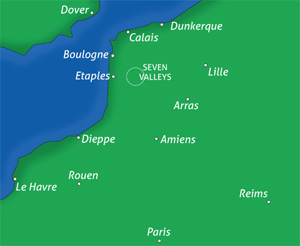

NORD PAS DE CALAIS is a region much appreciated by the Brits and other northern Europeans. A region of contrasting landscapes, forests and woods, gentle meadows and marshlands, rolling hills dotted with windmills and a varied coastline that stretches for miles and miles. The area of the Seven Valleys where our village is situated offers the best of the region. Given its name by the seven rivers it is ideal for fishing. Wide-open spaces of unspoilt countryside make up the Regional Natural Parks and the area also has one of the largest network of waterways for river cruising in Europe. It is also an area with proud traditions where fairs, fêtes and festivals are so much a part of daily life.
Steeped in history, discover its rich heritage proudly displayed by its many monuments and museums and historic cities dating from Roman times to the last World Wars. France is also especially famous for its wonderful gastronomy and the Nord-Pas-de-Calais region is no exception with fine examples of mouth-watering regional specialities as well as numerous locally brewed beers.
Things to do